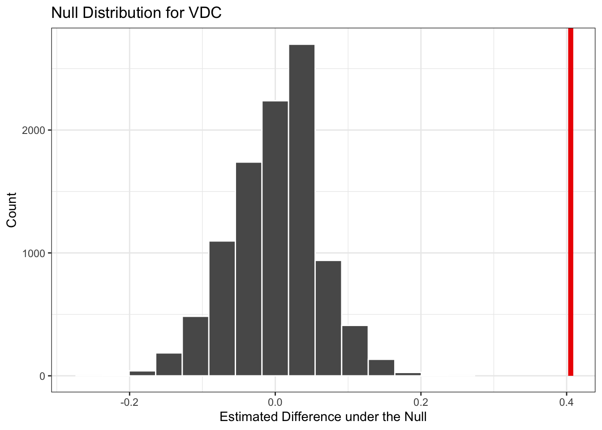

In the previous module, we learned about hypothesis testing and how to test hypotheses about a single mean. In this module, we will learn how to test hypotheses about two means. We will learn about treatment effects, which are the differences in means between two groups. We will learn how to permute our data to simulate a null distribution of treatment effects and compare this with the observed treatment effect to test the null hypothesis. And we will apply these skills to a real-world example from the field of international development.
In this lesson, we are going to be furthering our understanding of non-parametric methods for hypothesis testing. Recall that non-parametric methods are used when assumptions of normality are not met or when the shape of the distribution is unknown, as is often the case in social science analysis.
For the case of comparing two means, we will be using a permutation test. A permutation test generates a null distribution of the test statistic by shuffling the data many times and recalculating the test statistic each time. This allows us to test hypotheses about the mean without making assumptions about the distribution of the data. Here is a video that gives the intuition behind permutation tests:
Comparing two means
Often in the social sciences, we are interested in comparing two groups. This situation is especially common in experimental studies, where we are interested in comparing the outcomes of a treatment group to a control group.
Experimental studies, as you may know, are very important in the realm of international development. Monitoring and evaluation of development projects often involve comparing the outcomes groups that were exposed to a program and those that were not.
In such scenarious, our null hypothesis is that there is no difference between the two groups while the alternative hypothesis is that there is a difference between the two groups. Under the null hypothesis, treatment has NO impact on the outcome of interest. This means that if we were to change the values of the treatment variable, the values of the outcome would stay the same.
Our strategy for testing the null hypothesis is to calculate the difference in means between the two groups and then compare this difference to the distribution of differences that we would expect to see if the null hypothesis were true. To do this, we can simulate the null distribution by reshuffling the treatment variable, calculating the treatment effect and then repeating this process many times. Then we can ask: how likely would we be to observe the treatment effect in our data, if there is no effect of the treatment?
Let’s assume that we are interested in the impact of a program on the income of participants. We have data on the income of participants in the treatment group and the control group that looks like this:
Village
Program
Outcome
A
Yes
Yes
B
Yes
No
C
Yes
No
D
No
Yes
E
No
No
F
No
No
Our first step would be to calculate the difference in means between the two groups for the outcome in question. The objective would be to understand the initial observed association between participation in the program and the outcome of interest.
Next, we would shuffle the treatment variable (program participation), but not the outcome, and recalculate the difference in means, like this:
Village
Program
Outcome
A
Yes
Yes
B
No
No
C
Yes
No
D
Yes
Yes
E
No
No
F
No
No
And then again take the difference in means between the two groups.
We would repeat this process many times to generate a distribution of differences in means that we would expect to see if the null hypothesis were true. In doing this, we are essentially asking “what would the distribution of differences in means look like if the relationship between the treatment and outcome were completely random?”
Finally, we would compare the observed difference in means to the distribution of differences in means that we generated through our random shuffling (our bootstrap procedure). If the observed difference in means is extreme (i.e. it is very unlikely to have occurred by chance), we would reject the null hypothesis and conclude that the treatment has an impact on the outcome of interest.
Post-conflict development example
Sierra Leone was devastated by a civil war lasting from 1991 to 2002. In the post-conflict context, the Ministry of Local Government and Community Development implemented the GoBifo (“forge ahead”) CDD project in Sierra Leone from 2005-2009 (with support from the World Bank and other international donors). See this report for a detailed summary of the program.
The GiBifo program also included an impact evaluation, conducted by economists Katherine Casey, Rachel Glennerster, and Edward Miguel. The original study includes dozens of outcome variables, but for the purposes of this illustration we will focus on just the treatment variable and whether the community had a village development committee (VDC) which is coded “1” if the village had one and “0” if it did not.
In other words, we will be looking at whether participation in the program boosts the chance that a village has a VDC. You can access the data for this exercise here or in the classwork folder.
Let’s start by loading the packages and have a glimpse() at the data.
There are 236 villages in the study and eight columns in the data frame. There is a village ID, a variable that distinguishes between treatmetn and control groups, and five outcome variables. As mentioned, we will just be focusing on the treatment variable and the village decision making infrastructure (vdc) variable here.
Let’s count the observations in the treatment and control groups.
# A tibble: 2 × 2
# Groups: t [2]
t n
<chr> <int>
1 control 118
2 treatment 118
It looks like the villages are evenly split: 118 in the treatment group and 118 in the control group.
Next, let’s calculate the means of the VDC variable in the treatment and control groups and also calculate the treatment effect. The treatment effect is the difference in means between the treatment and control groups.
# calculate the means of each response variable in both treatment and control villagesmeans<-gobifo_data|>group_by(t)|>summarize(mean_vdc =mean(vdc, na.rm =TRUE))# store the means for treatment and control as separate objectsmean_vdc_t<-means$mean_vdc[2]mean_vdc_c<-means$mean_vdc[1]# calculate the treatment effect and storeteffect_vdc<-mean_vdc_t-mean_vdc_c# print the resultsteffect_vdc
[1] 0.4056207
We see that the treatment effect is 0.406. This means that the villages in the treatment group are about 40.6% more likely to have a VDC than the villages in the control group.
Now we can get about the business of testing our hypothesis that the program had an impact on the presence of VDCs in the villages. Our null and alternative hypotheses are as follows:
Null Hypothesis: The mean of VDCs in the treatment group is equal to the mean of VDCs in the control group. Or, in other words, the program had no impact on VDCs.
Alternative Hypothesis: The mean of VDCs in the treatment group is not equal to the mean of VDCs in the control group. Or, in other words, the program had an impact on VDCs.
Now we can use the infer package to conduct a hypothesis test. First we specify the response variable, which in this case is the VDC variable, and the explanatory variable, which is the treatment variable. Then we hypothesize that the two variables are independent of each other. Next, we generate a null distribution by permuting the treatment variable and calculating the difference in means between the treatment and control groups. Finally, we calculate the p-value by comparing the observed treatment effect to the null distribution.
null_dist_vdc<-gobifo_data|>specify(response =vdc, explanatory =t)|>hypothesize(null ="independence")|>generate(reps =10000, type ="permute")|>calculate(stat ="diff in means", order =c("control", "treatment"))# calculate p-value using inferget_pvalue(null_dist_vdc, obs_stat =teffect_vdc, direction ="greater")
# A tibble: 1 × 1
p_value
<dbl>
1 0
Remember that the null distribution is the distribution of treatment effects we would expect to see if the program had no impact. The treatment effect is the difference in means we observed in the data. If the treatment effect is far from the null distribution, it suggests that the treatment effect is unlikely to be due to chance alone.
In this case, we see that our p-value is zero, meaning that there are no treatment effects in the null distribution that are as extreme as the treatment effect we observed. This means that the treatment effect is very unlikely to be due to chance alone and we can reject the null hypothesis.
Finally, let’s visualize the treatment effect relative to the null distribution using the visualize() function from the infer package.
visualize(null_dist_vdc)+shade_p_value(obs_stat =teffect_vdc, direction ="greater")+labs(title ="Null Distribution for VDC", x ="Estimated Difference under the Null", y ="Count")+theme_bw()

Here we can see just how far the treatment effect is from the null distribution. There are no observations in the null distribution that are as extreme as the treatment effect we observed, and this is why we get a p-value of 0. This is pretty strong evidence that the program has an impact on the presence of VDCs in the villages.